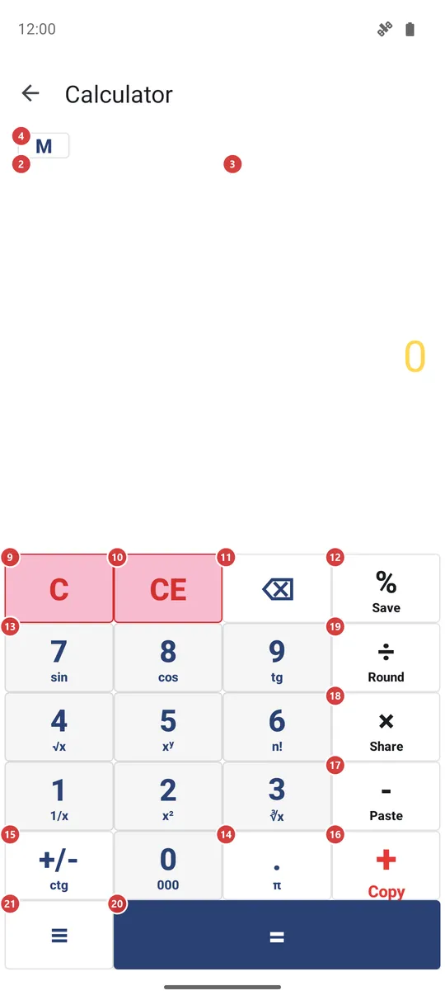
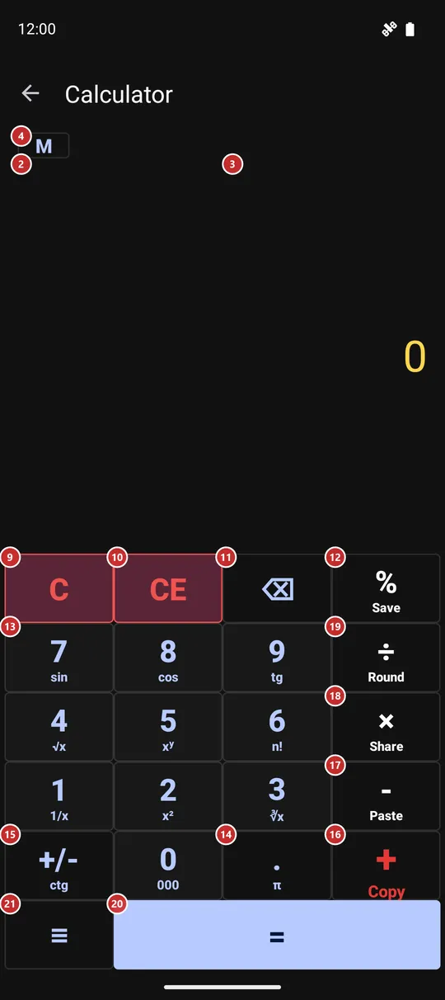

Calculator
What this is for
A calculator for quick sums without leaving the app. It shows the answer while you type, keeps a history you can copy, send or save, and has memory keys and scientific functions under the menu.


In this order
- Type the first number with the digit keys 13 and the decimal point 14. The number appears in the result 3. Backspace 11 removes the last digit.
- Press an operator: plus 16, minus 17, times 18 or divide 19. Then type the second number. While you type it, the history 2 already shows what Equals would give.
- Press Equals 20 to finish the sum. It goes into the history 2, and tapping the result 3 copies it.
- Percent 12 and Change sign 15 work on the number you are typing. Clear entry 10 wipes only that number, and Clear 9 starts the whole sum again.
- To keep a running total, show the memory keys with 4 and use M+ 5, M- 6, MR 7 and MC 8. The indicator 1 tells you what is stored.
- Touch and hold a key for its second job, written in small type under its symbol. The menu key 21 holds the rest: functions, send, save history and settings.
- If the screen says that the calculator is off, press 23 to open Settings and switch it on.
The elements
Result and history
1Memory indicatorShows the number kept in memory, so you do not have to remember it.
It reads M and the stored number, and it sits to the left of the M key. It appears only while the memory holds something other than zero, and it disappears again after you clear the memory.
2HistoryLists the finished sums, with the one you are typing at the bottom.
Each finished sum takes one line, for example 125+37=162. While you type the second number of a sum, the last line also shows the answer Equals would give, so you see it before you press anything. If the sum has no answer yet, such as a divide by a zero you are still typing past, the line simply stays as it was.
The history is kept between launches. You can select any part of it with a long press and copy it. Pinch it with two fingers to make the text bigger or smaller; there are five sizes, and the one you choose is remembered. With the Large keys keypad the history shrinks to a few lines.
You can send the whole history away or save it as a file from the menu.
- Undo
- Clear history in the menu deletes every saved line. It cannot be undone, so save the history first if you may need it.
3ResultShows the number you are typing, and then the answer.
Tap it to copy the number to the clipboard; the copy has no digit grouping, so it pastes cleanly anywhere. Touch and hold it to paste a number from the clipboard. If the clipboard holds a whole sum, such as 12*7+5, the calculator works it out and puts the answer in the history.
Long numbers shrink to fit the width. With Group digits on, a comma separates every three digits. A message such as Can't divide by zero. shows here when a sum has no answer; Clear or any digit key takes it away.
Memory keys
4Show or hide memory keysShows or hides the row of four memory keys.
The memory keys stay out of the way until you need them. Press M once to show the row and again to hide it. The calculator remembers whether the row was open the next time you come back.
5Memory addAdds the number on the result line to the memory.
Use it to build a running total across several sums: work out one amount, press M+, then start the next. The result line does not change, and the indicator shows the new total in memory. The memory is saved, so it is still there after you close the calculator.
6Memory subtractSubtracts the number on the result line from the memory.
It is the opposite of M+. Use it when a figure has to come off the running total. The result line does not change; the indicator shows the new total.
7Memory recallPuts the number kept in memory on the result line.
The stored number is typed in as if you had entered it yourself, so you can use it as the first or the second number of a sum. The memory itself stays as it was.
8Memory clearSets the memory back to zero.
Use it when a running total is finished and you want to start another. The memory indicator disappears.
- Undo
- The stored number is lost, and the calculator has no undo for it. Press MR first if you want to see it one last time.
Keypad
9ClearWipes the whole sum and starts again from 0.
It clears the number you are typing, the operator you pressed and the unfinished line at the bottom of the history, and it also takes away an error message. The history and the memory are not touched.
- Shortcut
- Esc
10Clear entryWipes only the number you are typing and keeps the sum.
Use it when you mistyped the second number of a sum: the first number and the operator stay, and you can type the second number again. With no operator pressed it simply sets the number back to 0.
11BackspaceRemoves the last digit you typed.
Use it for a typo. When the result line holds a finished answer instead of a number you are typing, one press resets it to 0.
- Shortcut
- Backspace
12PercentTurns the number into a percentage in the way you probably mean it.
After plus or minus it takes that percent of the first number: 200 + 10 % gives 20, so Equals then adds 20 to 200. Otherwise it divides the number by 100. Touch and hold the key to save the history to a file, as Save history in the menu does.
13Digit keys 0-9Type the number: ten keys, 0 to 9, three rows of three and a 0 below.
Each press adds a digit to the number on the result line. Leading zeros are dropped, so 007 becomes 7. A physical keyboard works too: the digits on the top row or the number pad.
Every digit key has a second job when you touch and hold it, written in small type under the digit: 1 gives 1/x, 2 gives x squared, 3 the cube root, 4 the square root, 5 raises to a power, 6 the factorial, 7 the sine, 8 the cosine and 9 the tangent. Holding 0 types three zeros at once, which is handy for thousands. Each of these does the same as the matching row in the Function window.
- Shortcut
- 0 / 1 / 2 / 3 / 4 / 5 / 6 / 7 / 8 / 9
14Decimal pointAdds a decimal point to the number.
A number can have only one point, so a second press does nothing. After an operator, or on a fresh sum, the point starts the number as 0.. Touch and hold the key to put in the number pi.
- Shortcut
- .
15Change signSwitches the number between positive and negative.
Press it before or after typing the number. It does nothing to a zero. Touch and hold the key for the cotangent (ctg) of the number, in degrees.
16AddAdds the next number to the one before it.
Press it after the first number, then type the second one. In a longer chain the sum is worked out from left to right: pressing the next operator after the second number works out the sum so far and carries the answer on. Touch and hold the key to copy the result. On a keyboard, the plus key does the same as a tap.
17SubtractTakes the next number away from the one before it.
Use it between two numbers. To type a negative number, use Change sign instead. Touch and hold the key to paste a number or a sum from the clipboard.
- Shortcut
- -
18MultiplyMultiplies the number before it by the next one.
Press it between two numbers. Touch and hold the key to send the result to another app through the share sheet.
- Shortcut
- *
19DivideDivides the number before it by the next one.
Press it between two numbers. A division by zero has no answer, so the history stays quiet while you type, and the message Can't divide by zero. appears only when you press Equals. The calculator then also shows a joke alert that looks like a system warning about deleted data; it is a prank, and nothing is deleted. Its only button, More details.., opens a web page about April Fools' Day in your browser.
Touch and hold the key to round the number on the result line to a whole number.
- Shortcut
- /
20EqualsFinishes the sum and shows the answer.
The finished sum goes into the history. Press Equals again straight away to repeat the last operation: after 5 + 3 = 8 the next press gives 11, then 14. Starting a new number clears that repeat.
- Shortcut
- Enter / =
When the calculator is off
22Calculator is offTells you that the calculator is switched off in Settings.
When the calculator is switched off in Settings, the keypad gives way to a short message. You can meet it, for example, when you open the calculator from a home-screen widget. The calculator does not work until you switch it on again.
23Open SettingsOpens Settings on the tab where the calculator is switched on.
It takes you to the Management tab of Settings; the Calculator switch is under Additional programs and scenarios. Turn it on, come back to this screen, and the keypad is there. No restart is needed.
Function window
24FunctionLists fifteen extra functions in two columns.
Pick a function and the window closes. Most work on the number on the result line at once: sin, cos, tg and ctg (in degrees), square root, cube root, square, 1/x, log, ln and n!. Power (xʸ), DIV (whole-number division) and mod (remainder) are operators: press one, then type the second number and press Equals. The pi row puts the number pi on the result line. A function that has no answer for the number, such as the square root of a negative or the factorial of 1.5, shows an error message instead. The same functions sit under a held digit key.
Calculator settings window
25Group digitsPuts a comma between every three digits so long numbers are easier to read.
With it on, 1234567 reads as 1,234,567. The grouping applies on both sides of the decimal point and only changes how the number looks. A copied number always has no commas. It is on by default.
26Result sizeSets how large the result is, from small to very large.
Drag the slider to choose the biggest size the result can have. Very long numbers still shrink so that they fit the line. The default is a middle size.
27KeypadPicks the shape of the keypad: Normal, Large keys or Compact.
Normal is the standard layout. Large keys makes the keypad take most of the screen and cuts the history to a few lines, which is easier with big fingers. Compact, bottom right gathers smaller keys in the bottom right corner so that one thumb reaches all of them.
28CancelCloses the window without saving your choices.
Nothing changes: the settings stay as they were before you opened the window.
29ApplySaves the three choices and closes the window.
The calculator uses the new settings at once. The choices are kept for the next time.